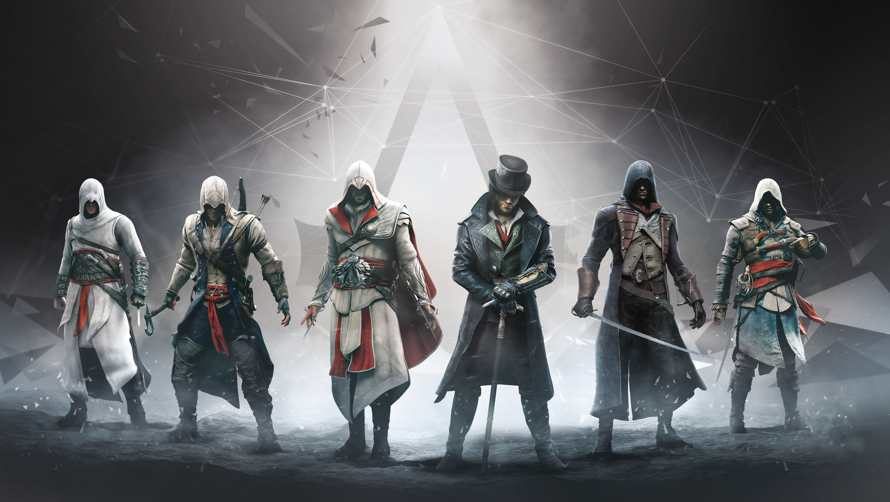

Assassin's Creed, spesso abbreviato in AC, è una serie di videogiochi action-adventure sviluppata da Ubisoft Montréal e Ubisoft Annecy e pubblicata da Ubisoft Entertainment per console e PC.
I giochi principali sono stati sviluppati da Ubisoft Montreal per la modalità singola e da Ubisoft Annecy per il multiplayer, mentre i titoli per console portatili da Gameloft e Gryptonite Studios, con la supervisione di Ubisoft Montreal. La serie ha riscosso molto successo sia dal pubblico che dalla critica, con oltre 74 milioni di copie vendute fino ad aprile 2014, diventando la serie più comprata della Ubisoft. L'ispirazione per la creazione viene dal romanzo del 1938 Alamut dello sloveno Vladimir Bartol, ed è spesso considerata il successore spirituale di Prince of Persia.
Il gameplay è basato sul concetto di open world, con molti elementi tratti dal parkour. La trama, che viene narrata attraverso salti temporali di varie epoche, vede la lotta tra l'Ordine Templare, un gruppo che ha come obiettivo il totale controllo sulla vita degli uomini per dar loro uno scopo e guidarli alla vera pace, e la Confraternita degli Assassini, un'altra fazione che invece vuole migliorare il mondo ispirando la giustizia ed eliminando i tiranni.
Il principale protagonista della serie fino al terzo capitolo della saga è Desmond Miles, un barista venticinquenne di Manhattan, fuggito a 16 anni da un rifugio di Assassini chiamato "La Fattoria" perché incapace di comprendere il vero scopo dei suoi estenuanti allenamenti e stanco dell'iperprotettività dei suoi genitori che lo mettevano in guardia da un nemico che lui non aveva mai visto. Egli, a causa di una multinazionale nota come Abstergo, si ritroverà a rivivere le memorie dei suoi antenati grazie ad uno speciale dispositivo chiamato Animus per trovare dei manufatti misteriosi chiamati Frutti dell'Eden, i quali sembrano essere dotati di straordinari poteri. Inizialmente costretto dai Templari, successivamente li cercherà volontariamente assieme agli Assassini in una corsa contro il tempo per salvare il mondo da un'immane catastrofe.
I giochi principali sono stati sviluppati da Ubisoft Montreal per la modalità singola e da Ubisoft Annecy per il multiplayer, mentre i titoli per console portatili da Gameloft e Gryptonite Studios, con la supervisione di Ubisoft Montreal. La serie ha riscosso molto successo sia dal pubblico che dalla critica, con oltre 74 milioni di copie vendute fino ad aprile 2014, diventando la serie più comprata della Ubisoft. L'ispirazione per la creazione viene dal romanzo del 1938 Alamut dello sloveno Vladimir Bartol, ed è spesso considerata il successore spirituale di Prince of Persia.
Il gameplay è basato sul concetto di open world, con molti elementi tratti dal parkour. La trama, che viene narrata attraverso salti temporali di varie epoche, vede la lotta tra l'Ordine Templare, un gruppo che ha come obiettivo il totale controllo sulla vita degli uomini per dar loro uno scopo e guidarli alla vera pace, e la Confraternita degli Assassini, un'altra fazione che invece vuole migliorare il mondo ispirando la giustizia ed eliminando i tiranni.
Il principale protagonista della serie fino al terzo capitolo della saga è Desmond Miles, un barista venticinquenne di Manhattan, fuggito a 16 anni da un rifugio di Assassini chiamato "La Fattoria" perché incapace di comprendere il vero scopo dei suoi estenuanti allenamenti e stanco dell'iperprotettività dei suoi genitori che lo mettevano in guardia da un nemico che lui non aveva mai visto. Egli, a causa di una multinazionale nota come Abstergo, si ritroverà a rivivere le memorie dei suoi antenati grazie ad uno speciale dispositivo chiamato Animus per trovare dei manufatti misteriosi chiamati Frutti dell'Eden, i quali sembrano essere dotati di straordinari poteri. Inizialmente costretto dai Templari, successivamente li cercherà volontariamente assieme agli Assassini in una corsa contro il tempo per salvare il mondo da un'immane catastrofe.